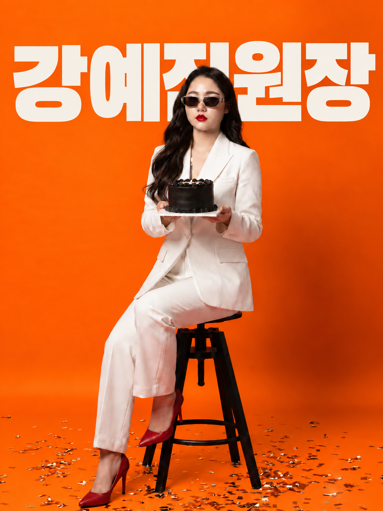
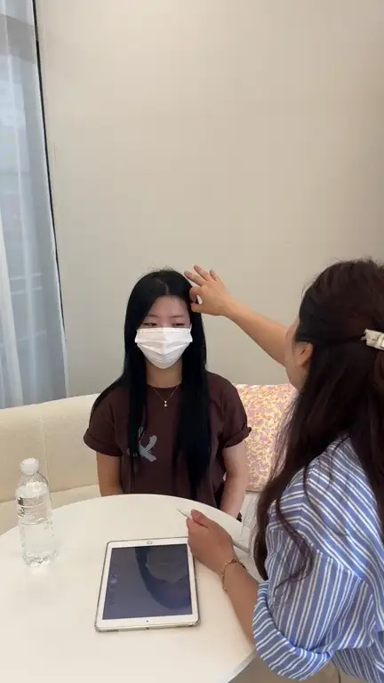
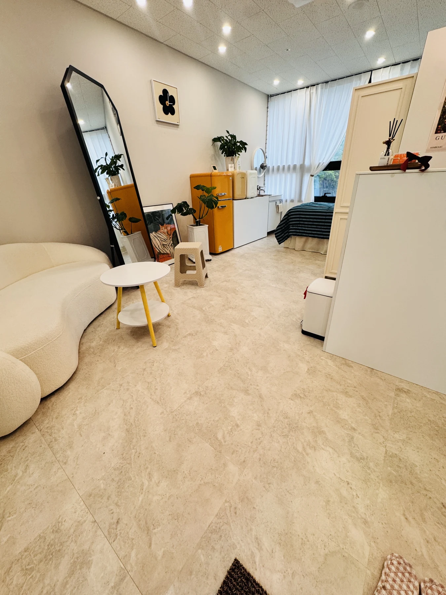
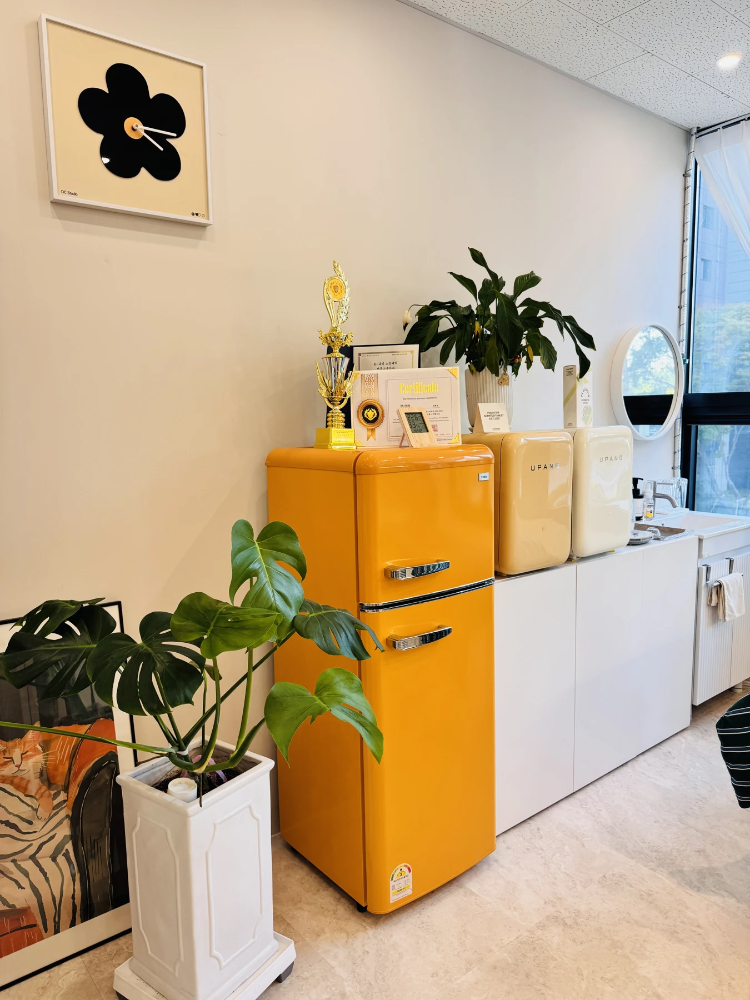

너무 진해 보일까 봐
눈썹만 도드라지기보다 내 얼굴과 자연스럽게 어우러지길 원해요.
Your beauty, naturally.
Before you decide.
매일 거울로 보게 될 내 얼굴이니까요.
가격도, 결과도, 나에게 어울릴지도 신중하게 따져보세요.
엘르온유가 어떤 기준으로 디자인하고,
어떻게 상담하는지 먼저 알려드릴게요.
읽어보신 뒤, 상담부터 시작해도 괜찮습니다.
마음에 들지 않는다고 바로 바꾸기 어려운 시술.
어떤 모양을 만드는지보다, 내 이야기를 어떻게 듣는지 먼저 살펴보세요.
눈썹만 도드라지기보다 내 얼굴과 자연스럽게 어우러지길 원해요.
유행하는 모양보다 내 얼굴에 어울리는 디자인인지 확인하고 싶어요.
지금 눈썹 위에 가능한지, 어떤 변화가 필요한지 먼저 알고 싶어요.
그 고민을 듣는 것부터 시작합니다.
A thoughtful touch.
미대에서 공부하고 웹·패키지를 디자인하며, 모양과 균형이 전체 인상에 주는 차이를 고민해 왔습니다. 이제 그 시선으로 한 사람의 얼굴에 어울리는 눈썹을 살펴봅니다.
고객님들이 자주 말씀해 주시는 건 자세한 상담, 꼼꼼함, 그리고 자연스러움입니다. “내 것처럼 자연스러운 눈썹”이라는 소개처럼, 눈썹만 돋보이기보다 얼굴과 어우러지는 디자인을 지향합니다.

DETAILS MAKE THE DIFFERENCE.
It starts with you.
원하는 눈썹을 정확한 말로 설명하지 못해도 괜찮아요. 평소 그리는 모양, 피하고 싶은 느낌, 기존 잔흔에 대한 고민을 편하게 알려주세요. 충분히 듣고 거울 앞에서 디자인을 함께 확인합니다.
평소의 고민과 원하는 모습을 먼저 듣습니다.
내 얼굴 위에서 모양을 확인하고 함께 조율합니다.
자연스러운 인상과 나다운 분위기를 고민합니다.
나에게 어울리는 눈썹을 찾아보세요.
사진을 누르면 크게 보고 넘겨볼 수 있어요.
실제 시술 사례이며 개인의 눈썹·피부 상태에 따라 결과는 달라질 수 있습니다.
Your turn to feel beautiful.
현재 눈썹 사진과 원하는 분위기를 카카오채널로 알려주세요.
엘르온유는 “내 것처럼 자연스러운 눈썹”을 지향합니다. 원하는 느낌과 피하고 싶은 모양을 듣고, 거울 앞에서 얼굴에 어울리는 디자인을 함께 확인해요.
게시된 사진은 실제 시술 사례입니다. 모든 분에게 같은 결과가 나오는 것은 아니니, 내 눈썹과 피부 상태에 맞는 상담을 받아보세요.
현재 상태부터 확인하는 것이 먼저예요. 카카오채널로 눈썹 사진과 고민을 보내주시면 상담을 이어갈 수 있습니다. 진행 가능 여부와 이벤트 적용 조건은 상태를 확인한 뒤 안내해 드려요.
지금 눈썹이 마음에 들고 그리는 데 불편함이 없다면, 서둘러 결정할 필요는 없어요.
이런 고민이 있다면, 어떤 변화가 어울릴지 상담부터 시작해 보세요.
느끼는 불편함과 필요한 시간은 개인의 상태에 따라 다를 수 있습니다. 걱정되는 점이 있다면 예약 전 상담에서 먼저 말씀해 주세요. 진행 과정과 확인할 사항을 안내받고 결정하시면 됩니다.
원하는 분위기와 피하고 싶은 부분까지 충분히 이야기할 수 있는지.
내 얼굴 위에서 모양을 보고 의견을 나눌 수 있는지.
기존 눈썹과 잔흔을 확인하고 진행 여부와 조건을 안내하는지.
원하는 시술을 선택하고
카카오채널로 편하게 문의해 주세요.
내 얼굴에 어울리는 눈썹 디자인
리뷰 작성 시
40,000원
1년 이내 재방문
100,000원
속눈썹펌은 리뷰 작성 조건의 가격입니다. 리뷰 작성 방법과 미작성 시 가격은 상담으로 안내해 드립니다.
기존 잔흔, 리터치 포함 여부 등 헤어스트록 이벤트의 적용 조건은 상담 시 확인해 주세요.
Your beauty, naturally.
매일 눈썹을 그리는 수고가 조금 줄고,
거울 속 인상이 조금 더 정돈돼 보이는 것.
엘르온유가 함께 찾고 싶은 건
화려한 변화보다 나에게 어울리는 자연스러움입니다.
내 것처럼 자연스러운 눈썹.
당신의 아름다움을 찾아드립니다.

Come as you are.

A little warmth.
A little beauty.
All for you.
A little change, all yours.
나에게 어울리는 눈썹이 궁금하신가요?
원하는 스타일을 설명하기 어려워도 괜찮아요.
카카오로 고민을 나누거나 네이버에서 예약해 주세요.
09:30–17:00 · 매주 일요일 휴무